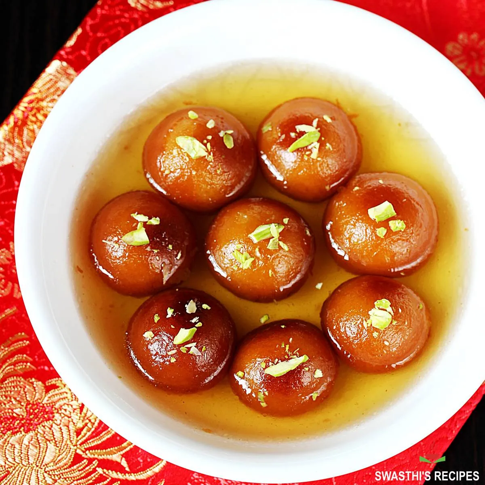

Gulab Jamun
Soft, sweet, and soaked in fragrant rose-scented syrup — Gulab Jamun is a beloved Indian dessert that's rich, satisfying, and perfect for celebrations or a cozy sweet treat.
Preparation:
20-30 minutes active prep
Rest Time:
10 minutes (for dough resting)
Cook:
20-30 minutes (frying and soaking)
Total:
About 1-1.5 hours
Ingredients:
For the Syrup:
- 1 1/2 cups (300g) sugar
- 1 1/2 cups (360ml) water
- 1 teaspoon rose water (or a few drops rose essence)
- 4-5 green cardamom pods, slightly crushed
- A few saffron strands (optional)
For the Dough:
- 1 cup (120g) milk powder
- 1/4 cup (30g) all-purpose flour
- 1/4 teaspoon baking soda
- 2 tablespoons ghee (or unsalted butter), softened
- 2-3 tablespoons milk (as needed for kneading)
- Oil or ghee, for deep frying
Instructions:
- To make the syrup, combine sugar, water, cardamom pods, and saffron in a saucepan. Bring to a boil, then simmer for 5-7 minutes until slightly thickened. Stir in rose water and set aside, keeping it warm.
- For the dough, mix milk powder, flour, and baking soda in a bowl. Add ghee and mix until crumbly.
- Gradually add milk, a little at a time, to form a soft, slightly sticky dough. Cover and let it rest for 10 minutes.
- Divide the dough into small, smooth balls without cracks (about the size of a large marble).
- Heat oil or ghee for frying over low to medium heat. Fry the balls slowly, stirring gently, until they are evenly golden brown. (Low heat is key for proper cooking inside.)
- Remove the fried balls and drain briefly on paper towels, then immediately transfer them to the warm syrup. Let them soak for at least 1-2 hours to absorb the syrup fully.
- Serve warm or at room temperature, garnished with extra saffron or chopped pistachios if desired.